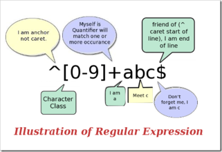

目录
- 本文目标
- 如何使用本教程
- 正規表現とは一体何ですか？
- 入门
- 测试正则表达式
- 元字符
- 字符转义
- 重复
- 字符类
- 分枝条件
- 反义
- 分组
- 后向引用
- 零宽断言
- 负向零宽断言
- 注释
- 貪欲と怠惰
- 处理选项
- 平衡组/递归匹配
- 还有些什么东西没提到

本文目标
30分以内で正規表現が何かを理解し、基本的な知識を得て、自分のプログラムやウェブページで使えるようにします。
本チュートリアルの使い方
以下にある複雑な式を見て怖がらないでください。私と一緒に一歩一歩進んでいけば、正規表現は実は想像していたほど難しくないことがわかります。もちろん、このチュートリアルを読み終えた後、たくさん理解できたのに、ほとんど何も覚えていないというのも普通のことです——私の考えでは、正規表現に触れたことがない人がこのチュートリアルを読んだ後で、言及された構文を80％以上覚えられる可能性はゼロです。ここでは基本的な原理を理解してもらうだけで、今後はたくさん練習し、たくさん使って初めて正規表現を習得できます。
入門チュートリアルとしての役割に加えて、この記事は日常業務で使える正規表現の構文リファレンスマニュアルにもなろうとしています。筆者自身の経験から言うと、この目標はかなり達成できています——ほら、私自身もすべてを覚えているわけではありませんよね？
正規表現とはそもそも何なのか？
文字列を扱うプログラムやウェブページを書くとき、複雑な規則に合致する文字列を検索する必要がよくあります。正则表达式正規表現はこれらの規則を記述するためのツールです。言い換えれば、正規表現とはテキストの規則を記録したコードです。
おそらくWindows/DOSでファイル検索に使ったことがあるでしょう。通配符(wildcard)、すなわち*と?。あるディレクトリ内のすべてのWord文書を検索したいなら、あなたは検索することになるでしょう。*.doc。ここでは、*それは任意の文字列として解釈されます。ワイルドカードと同様に、正規表現もテキストマッチングのためのツールですが、ワイルドカードよりも、より正確に自分のニーズを記述できます——もちろん、その代償としてより複雑ですが——たとえば、検索に使う正規表現を書くことができます。0で始まり、その後に2〜3桁の数字が続き、次にハイフン「-」、最後に7桁または8桁の数字が続くすべての文字列(像010-12345678或0376-7654321)。
注：字符これは、コンピュータソフトウェアがテキストを処理する際の最も基本的な単位であり、文字、数字、句読点、空白、改行文字、漢字などです。字符串は0個以上の文字の並びです。文本つまり、テキスト、文字列です。ある文字列が匹配ある正規表現にマッチするとは、通常、その文字列の一部（または複数の部分がそれぞれ）が式の条件を満たすことを指します。
入门
正規表現を学ぶ最善の方法は、例から始めることです。例を理解したら、自分で例を変更したり実験したりしてみましょう。以下に、多くの簡単な例とその詳しい説明を示します。
あなたが英語の小説の中で「hi」を検索するとします。hi、正規表現を使うことができます。hi。
これはほぼ最も単純な正規表現で、次のような文字列を正確にマッチさせることができます：2つの文字から構成され、最初の文字はh、2番目の文字はiです。。通常、正規表現を処理するツールには大文字と小文字を無視するオプションがあります。このオプションを選択すると、次のものにマッチします：hi,HI,Hi,hIこれら4つのケースのいずれかです。
残念ながら、多くの単語には「hi」という連続する文字が含まれています。hiこの2つの連続する文字、例えば「this」の中の「hi」のようなものです。him,history,high等等。用hiで検索すると、ここにある「hi」も見つかってしまいます。hiも見つかってしまいます。もし「hi」だけを検索したいなら、hi という単語を正確に検索するならば、私たちは「\bhi\b」を使用すべきです。\bhi\b。
\bは正規表現で定義された特別なコードです（まあ、それをこう呼ぶ人もいます元字符，metacharacter）、...を表しています単語の先頭または末尾、つまり単語の境界位置。通常、英語の単語はスペース、句読点、または改行で区切られますが、\bこれらの単語区切り文字のどれにもマッチしません。それは1つの位置のみにマッチする。
注：より正確な言い方をすれば、単語の境界です。\b次のような位置にマッチします：その前の文字と後ろの文字が両方とも単語文字であるわけではない位置（一方が単語文字で、もう一方が単語文字でないか、存在しない）\w。
あなたが探しているものがhiのすぐ後ろにLucyが続く，你应该用\bhi\b.*\bLucy\b。
ここで、.は別のメタ文字で、単語の先頭または末尾にマッチします。改行以外の任意の文字。*同じくメタ文字ですが、それが表すのは文字でも位置でもなく、数量です——つまり*を指定します。前の内容は、式全体がマッチするように、任意の回数だけ連続して繰り返し使用できます。。因此，.*つながっているということは改行を含まない任意の数の文字。現在\bhi\b.*\bLucy\bの意味は明白です：最初に単語hi、次に任意の文字（ただし改行は不可）、最後に単語Lucy。
注：改行文字は'\n'で、ASCIIコード10（16進数0x0A）の文字です。
他のメタ文字を同時に使うと、より強力な正規表現を構築できます。たとえば次の例です：
0\d\d-\d\d\d\d\d\d\d\d次のような文字列にマッチ：0 で始まり、次に 2 つの数字、次にハイフン「-」、最後は 8 つの数字（つまり中国の電話番号です。もちろん、この例は市外局番が3桁の場合のみマッチします）。
ここの\dは新しいメタ文字で、単語の境界以外の位置にマッチします。一位数字(0，或1，或2，或……)。-はメタ文字ではなく、それ自体だけにマッチします——ハイフン（またはマイナス、または中横線、または何と呼んでも構いません）。
あの厄介な繰り返しを避けるために、この式を次のように書くこともできます：0\d{2}-\d{8}。ここ\d後ろの{2}({8})の意味は前の\d必须连续重复匹配2次(8次)。
正規表現をテストする
正規表現が読み書きしにくいと感じないなら、あなたは天才か、あるいは地球人ではないでしょう。正規表現の構文は頭が痛くなるほど厄介で、よく使う人にとっても同じです。読み書きが難しく間違いやすいので、正規表現をテストするツールを見つけることは非常に重要です。
環境によって正規表現の詳細は異なります。ここでは利用可能な2つのテストツールを紹介します：
元字符
もういくつか有用なメタ文字を知っていますね。たとえば\b,.,*，还有\d。正規表現にはさらに多くのメタ文字があります。たとえば\s匹配任意の空白文字、スペース、タブ（Tab）、改行、中国語の全角スペースなど。\w匹配字母或数字或下划线或汉字等。
注：中国語/漢字に対する特別な処理は、.Netが提供する正規表現エンジンによってサポートされています。その他の環境での具体的な状況については、関連ドキュメントを参照してください。
次に、さらに多くの例を見てみましょう：
\ba\w*\b匹配以字母a先頭の単語——まず、ある単語の開始位置(\b)、次に文字a,その後に任意の数の英字または数字(\w*)、最後は単語の終了位置(\b)。
注：では、正規表現における「単語」の意味を説明しましょう：それは、1つ以上の連続した\w。そうです、英語を学ぶときに暗記する何千何万もの同名のものとは、実はあまり関係ありません :)
\d+匹配1個以上の連続した数字。ここでの+は、そして*類似のメタ文字ですが、異なる点は「\b」が単語の境界にマッチするのに対し、*匹配任意の回数繰り返す（0回の場合もある），而+则匹配重复1次或更多次。
\b\w{6}\b匹配ちょうど6文字の単語。
| 代码 | 说明 |
|---|---|
| . | 改行以外の任意の文字にマッチ |
| \w | 匹配字母或数字或下划线或汉字 |
| \s | 任意の空白文字にマッチする |
| \d | 匹配数字 |
| \b | 単語の先頭または末尾にマッチ |
| ^ | 文字列の先頭にマッチする |
| $ | 文字列の末尾にマッチする |
注：正規表現エンジンは通常、「指定された文字列が正規表現にマッチするかどうかをテストする」メソッドを提供します。例：JavaScriptのRegExp.test()メソッドや.NETのRegex.IsMatch()メソッド。ここでのマッチは、文字列の中に式の規則に適合する部分があるかどうかを指します。もし...を使用しないなら^と$ならば、...に対して\d{5,12}に関して言えば、そのような方法を使用すると、保証できるのは文字列の中に包含5到12连续位数字、ではなく、文字列全体が5〜12桁の数字であることではありません。
元字符^（数字6と同じキーにある記号）と$はどちらも1つの位置にマッチします。これは「\b」と似ていますが、ただ\b有点类似。^は、検索に使う文字列の先頭にマッチし、$は末尾にマッチします。この2つのコードは入力内容を検証するときに非常に便利です。例えば、あるWebサイトで入力するQQ番号が5〜12桁の数字でなければならない場合、次のように使用できます：^\d{5,12}$。
ここの{5,12}前に紹介した{2}は似ていますが、ただ「\B」は単語の境界ではない位置にマッチします。{2}匹配只能不多不少重复2次，{5,12}である繰り返しの回数は5回以上、12回以下でなければならない、そうでなければマッチしません。
使用したため^と$、したがって入力された文字列全体は、マッチのために使われます。\d{5,12}でマッチさせる、つまり入力全体がこのパターンに完全に一致する必要があります。5〜12桁の数字でなければならない、したがって、入力されたQQ番号がこの正規表現にマッチすれば、要件を満たすことになります。
大文字と小文字を無視するオプションと同様に、一部の正規表現処理ツールには複数行を処理するオプションもあります。このオプションを選択すると、^と$の意味は〜になる行の開始位置と終了位置にマッチする。
字符转义
メタ文字そのものを検索したい場合、たとえば次のものを検索するとき.,或者*、問題が発生します：それらを指定することができません。なぜなら、それらは別の意味に解釈されるからです。この場合は、...を使用する必要があります。\これらの文字の特別な意味を取り消すためです。したがって、...を使用すべきです。\.と\*。もちろん、検索するには\自体も、〜を使う必要があります\\.
例如：deerchao\.net匹配deerchao.net，C:\\Windows匹配C:\Windows。
重复
あなたはすでに前の〜を見ている*,+,{2},{5,12}これらの繰り返しマッチングの方法です。以下は、正規表現におけるすべての量指定子（数量を指定するコード、例：*、{5,12}など）です：
| 代码/语法 | 说明 |
|---|---|
| * | 重复零次或更多次 |
| + | 重复一次或更多次 |
| ? | 重复零次或一次 |
| {n} | 重复n次 |
| {n,} | 重复n次或更多次 |
| {n,m} | 重复n到m次 |
以下は繰り返しを使用したいくつかの例です：
Windows\d+匹配Windows后面跟1个或更多数字
^\w+匹配行の最初の単語（または文字列全体の最初の単語。具体的にどちらの意味でマッチするかはオプション設定による）
字符类
数字、文字または数字、空白を検索するのは簡単です。なぜなら、これらの文字集合に対応するメタ文字がすでにあるからです。しかし、定義済みのメタ文字がない文字集合（例えば母音のa,e,i,o,u）をマッチさせたい場合はどうすればいいでしょうか？
とても簡単です。角括弧の中にそれらを列挙するだけでよいのです。例えば[aeiou]就匹配任何一个英文元音字母，[.?!]匹配标点符号(.或?或!)。
文字を簡単に指定することもできます。范围，像[0-9]が表す意味は\dと完全に一致します：一位数字；同理[a-z0-9A-Z_]〜と完全に同等です\w（英語だけを考える場合）。
次はより複雑な式です：\(?0\d{2}[) -]?\d{8}。
注意：「(」と「)」もメタ文字です。後の分组节で言及されるので、ここでは「\d」を使用する必要があります。转义。
この式は次のものにマッチできますいくつかの形式の電話番号，像(010)88886666，或022-22334455，或02912345678など。これを少し分析してみましょう：まず最初はエスケープ文字です\(、それは0回または1回出現できます（「?」）、?)、その次は0、その後に2つの数字（「\d{2}」）、\d{2}）、次に)或-或空格のうちの1つで、それが1回または0回出現します(?）、最後に8つの数字（「\d{8}」）です。\d{8})。
分枝条件
残念ながら、さっきの式は次のようなものにもマッチします010)12345678或(022-87654321という「正しくない」形式です。この問題を解決するには、...を使う必要があります。分枝条件。正規表現の中の分枝条件は、いくつかの規則があり、そのうちのいずれか1つを満たせばマッチとみなすことを指します。具体的な方法は、...を使用することです。|異なる規則を区切ります。理解できない？大丈夫、例を見てください：
0\d{2}-\d{8}|0\d{3}-\d{7}この式は〜できるハイフンで区切られた2種類の電話番号にマッチする：1つは3桁の市外局番と8桁の市内番号（例：010-12345678）、もう1つは4桁の市外局番と7桁の市内番号（0376-2233445）です。。
\(?0\d{2}\)?[- ]?\d{8}|0\d{2}[- ]?\d{8}この式3桁の市外局番の電話番号に一致します。市外局番は丸括弧で囲んでも囲まなくてもよく、市外局番と市内番号の間はハイフンまたはスペースで区切っても、区切りなしでも構いません。。分岐条件を使用して、この式を市外局番4桁にも対応するように拡張してみてください。
\d{5}-\d{4}|\d{5}この式はアメリカの郵便番号にマッチするためのものです。アメリカの郵便番号の規則は、5桁の数字、またはハイフンで区切られた9桁の数字です。この例を示すのは、ある問題を説明できるからです：分岐条件を使用するときは、各条件の順序に注意してください。もしそれを〜に変更すると\d{5}|\d{5}-\d{4}の場合、5桁の郵便番号（および9桁の郵便番号の最初の5桁）だけにマッチします。理由は、分岐条件をマッチングする際、各条件が左から右にテストされ、ある分岐を満たすと、他の条件は考慮されないからです。
分组
単一の文字を繰り返す方法はすでに述べました（文字の直後に量指定子を付けるだけです）。しかし、複数の文字を繰り返したい場合はどうすればいいでしょうか？小括弧を使用して...を指定できます。子表达式(也叫做分组)、その後、この部分式の繰り返し回数を指定できます。また、部分式に対して他の操作を行うこともできます（後で紹介します）。
(\d{1,3}\.){3}\d{1,3}は一つの簡単なIPアドレスマッチング式です。この式を理解するには、次の順序で分析してください：\d{1,3}匹配1〜3桁の数字，(\d{1,3}\.){3}匹配3桁の数字に英文のピリオドを加えたもの（この全体はつまりこの分组)重复3次、最後にさらに〜を追加1桁から3桁までの数字(\d{1,3})。
注：IPアドレスの各数字は255を超えてはいけません。よく「01.02.03.04のように先頭に0が付いた数字は正しいIPアドレスですか？」と聞かれます。答えは：はい、IPアドレスの数字には前ゼロ（leading zeroes）を含めることができます。
残念ながら、これも「800-123-4567」にマッチします。256.300.888.999このような存在し得ないIPアドレス。もし算術比較を使用できれば、この問題を簡単に解決できるかもしれませんが、正規表現には数学に関する機能は一切ありません。したがって、長々としたグループ化、選択、文字クラスを使って正しいIPアドレスを記述するしかありません：((2[0-4]\d|25[0-5]|[01]?\d\d?)\.){3}(2[0-4]\d|25[0-5]|[01]?\d\d?)。
この式を理解する鍵は、グループ化と後方参照を理解することです。2[0-4]\d|25[0-5]|[01]?\d\d?、ここでは詳しく説明しません。自分でその意味を分析できるはずです。
反义
時には、簡単に定義できる文字クラスに属さない文字を検索する必要があります。例えば、数字以外なら任意の文字でよい場合です。この場合は...を使う必要があります。反义：
| 代码/语法 | 说明 |
|---|---|
| \W | 英字、数字、アンダースコア、漢字以外の任意の文字にマッチする |
| \S | 空白文字以外の任意の文字にマッチ |
| \D | 数字以外の任意の文字にマッチ |
| \B | 単語の先頭でも末尾でもない位置にマッチする |
| [^x] | x以外の任意の文字にマッチ |
| [^aeiou] | aeiouの文字以外の任意の文字にマッチする |
例子：\S+匹配空白文字を含まない文字列。
<a[^>]+>匹配山括弧で囲まれた、aで始まる文字列。
后向引用
小括弧で部分式を指定すると、このサブ式にマッチするテキスト。（つまり、このグループがキャプチャした内容）は、式または他のプログラムでさらに処理することができます。デフォルトでは、各グループは自動的に...を保持します。组号、その規則は：左から右へ、グループの左括弧を基準として、最初に現れるグループのグループ番号が1、2番目が2、以下同様です。
ええと……実は、グループ番号の割り当ては、さっき言ったほど単純ではありません：
- グループ0は正規表現全体に対応します。
- 実際には、グループ番号の割り当てプロセスでは、左から右へ2回スキャンします：1回目は名前のないグループだけに割り当て、2回目は名前付きグループだけに割り当てます——したがって、すべての名前付きグループのグループ番号は、名前のないグループの番号よりも大きくなります。
- 你可以使用(?:exp)のような構文を使用して、あるグループからグループ番号割り当てへの参加権を剥奪します
后向引用は前にマッチしたグループのテキストを繰り返し検索するために使用します。例えば、「\1」は最初のグループと同じテキストにマッチします。\1代表グループ1がマッチしたテキスト。理解しにくいですか？例を見てみましょう：
\b(\w+)\b\s+\1\bマッチに使用できます繰り返される単語，像go go, 或者kitty kitty。この式はまず〜です一个单词、すなわち単語の開始位置と終了位置の間にある複数の文字または数字(\b(\w+)\b）、この単語は番号1のグループにキャプチャされ、次に1个或几个空白符(\s+）、最後にグループ1でキャプチャされた内容（つまり、前にマッチした単語）(\1)。
サブ式のグループ番号を自分で指定することもできます。组名。部分式のグループ名を指定するには、次のような構文を使用します：(?<Word>\w+)(または山括弧を〜に置き換える'也行：(?'Word'\w+))、これで〜が\w+のグループ名として指定されるWord。このグループを後方参照するには、捕获の内容には、次を使用できます。\k<Word>、したがって前の例は次のように書くこともできます：\b(?<Word>\w+)\b\s+\k<Word>\b。
小括弧を使用する際には、他にも特定の用途のための構文がたくさんあります。以下に最もよく使われるものをいくつか挙げます：
| 分类 | 代码/语法 | 说明 |
|---|---|---|
| 捕获 | (exp) | exp にマッチし、テキストを自動命名されたグループにキャプチャする |
| (?<name>exp) | exp にマッチし、テキストを name という名前のグループにキャプチャします。(?'name'exp) と書くこともできます。 | |
| (?:exp) | exp にマッチし、マッチしたテキストをキャプチャせず、このグループにグループ番号を割り当てない | |
| 零宽断言 | (?=exp) | expの前の位置にマッチ |
| (?<=exp) | expの後の位置にマッチ | |
| (?!exp) | 後ろにexpが続かない位置にマッチする | |
| (?<!exp) | 直前がexpでない位置にマッチ | |
| 注释 | (?#comment) | このタイプのグループ化は正規表現の処理に何の影響もとえず、人が読むためのコメントを提供するために使われます。 |
最初の2つの構文についてはすでに説明しました。3つ目は(?:exp)正規表現の処理方法を変えるわけではなく、単にそのようなグループがマッチする内容のことです。前の2つのようにグループ内にキャプチャされることはなく、グループ番号も持たない。「なぜ私はこんなことをしたいのか？」——良い質問ですね。あなたはどう思いますか？
零宽断言
次の4つは、あるコンテンツ（ただしそのコンテンツ自体は含まない）の前または後にあるものを検索するために使われます。つまり、それらは...\b,^,$のように、特定の条件（すなわち断言）を満たすべき位置を指定するために使われます。そのため、それらは...とも呼ばれます。零宽断言。やはり例を使って説明するのが良いでしょう：
注：断言は、真であるべき事実を宣言するために使われます。正規表現では、断言が真である場合にのみマッチングが続行されます。
(?=exp)也叫零宽度正预测先行断言，它自分自身が出現する位置の後ろで、式expがマッチすることを断言する。比如\b\w+(?=ing\b)，匹配ingで終わる単語の前の部分(ing以外の部分)，如查找I'm singing while you're dancing.時、それは〜にマッチしますsingとdanc。
(?<=exp)也叫零宽度正回顾后发断言，它自分自身が出現する位置の前で、式expがマッチすることを断言する。比如(?<=\bre)\w+\b会匹配reで始まる単語の後半部分（re以外の部分）、例えば検索するときreading a book时，它匹配ading。
長い数字の3桁ごとにカンマを付けたい場合（もちろん右側からです）、次のようにして、前と内側にカンマを追加する必要がある部分を検索できます：((?<=\d)\d{3})+\b、それを使って1234567890検索すると結果は234567890。
次の例は、これら2つの断言を同時に使用しています：(?<=\s)\d+(?=\s)匹配空白文字で区切られた数字（繰り返しますが、これらの空白文字は含みません）。
否定先読み
前述のように、どうやって単語を検索するか。特定の文字ではない、または特定の文字クラスに含まれないの文字の方法（否定）。しかし、単に...したい場合はある文字が出現しないことを確認したいが、それをマッチさせたくない場合はどうすればよいでしょうか？例えば、文字qが含まれていて、そのqの後に文字uが続かない単語を検索したい場合、次のように試せます：
\b\w*q[^u]\w*\b匹配包含の後に文字uが続かない文字q。の単語。しかし、もっとテストをしてみると（または十分に鋭い観察力があれば直接気づくでしょう）、qが単語の末尾に現れる場合、例えば...Iraq,Benq、この式はエラーになります。なぜなら...[^u]は常に1文字にマッチするため、qが単語の最後の文字である場合、後続の...[^u]はqの後の単語区切り文字（スペース、ピリオド、その他何か）にマッチします。後続の...\w*\bは次の単語にマッチするため、「q」が含まれる単語を検索できます。\b\w*q[^u]\w*\b全体にマッチできますIraq fighting。负向零宽断言はこのような問題を解決できます。なぜなら、それは単に位置にマッチするだけで、...消费いかなる文字にもマッチしないからです。さて、この問題は次のように解決できます：\b\w*q(?!u)\w*\b。
零宽度负预测先行断言(?!exp)，この位置の後方が式expにマッチしないことを断言する。例如：\d{3}(?!\d)匹配3桁の数字であり、かつその3桁の数字の後ろは数字であってはなりません。；\b((?!abc)\w)+\b匹配連続文字列abcを含まない単語。
同様に、否定の先読みを使用できます。(?<!exp),零宽度负回顾后发断言来この位置の前方が式expにマッチしないことを断言する：(?<![a-z])\d{7}匹配前に小文字が付いていない7桁の数字。
より複雑な例：(?<=<(\w+)>).*(?=<\/\1>)匹配属性を含まない単純なHTMLタグの内側のコンテンツ。(?<=<(\w+)>)このような〜を指定した前缀：山括弧で囲まれた単語（例えば<b>など）、その次に.*（任意の文字列）、最後に后缀(?=<\/\1>)。接尾辞の中の〜に注意\/、前述の文字エスケープを使用しています；\1は後方参照であり、参照しているのは最初のグループの内容です。最初のキャプチャグループ、前の(\w+)マッチする内容。これにより、接頭辞が実際に<b>であれば、接尾辞は</b>になります。式全体がマッチするのは<b>と</b>の間の内容です（繰り返しになりますが、接頭辞と接尾辞自体は含みません）。
注：式を詳しく分析してください。(?<=<(\w+)>).*(?=<\/\1>)、この表現はゼロ幅断言の真の用途を最もよく示しています。
注释
小括弧のもう1つの用途は、構文「(?:...)」を使用してグループ化のみを行い、キャプチャしないことです。(?#comment)コメントを含める。例：2[0-4]\d(?#200-249)|25[0-5](?#250-255)|[01]?\d\d?(?#0-199)。
コメントを含めるには、「パターン内の空白を無視」オプションを有効にするのが最善です。これにより、式を書くときにスペース、タブ、改行を自由に追加でき、実際の使用時にはこれらはすべて無視されます。このオプションを有効にすると、#以降からその行の終わりまでのすべてのテキストはコメントとして無視されます。例えば、前述の式を次のように書くことができます：
(?<= # 断言要匹配的文本的前缀
<(\w+)> # 查找尖括号括起来的字母或数字(即HTML/XML标签)
) # 前缀结束
.* # 匹配任意文本
(?= # 断言要匹配的文本的后缀
<\/\1> # 查找尖括号括起来的内容：前面是一个"/"，后面是先前捕获的标签
) # 后缀结束
貪欲と怠惰
正規表現が繰り返しを受け付ける量指定子を含む場合、通常の動作は（式全体がマッチすることを前提として）マッチすることです尽可能多の文字。この式を例にとると：a.*b、それは〜にマッチしますaで始まりbで終わる最も長い文字列。それで検索するとaababの場合、文字列全体にマッチします。aabab。これは...と呼ばれます贪婪匹配。
時には、私たちはもっと控えめな（非貪欲な）マッチングを必要とします。懒惰マッチ、つまり可能な限り短い文字列にマッチします。尽可能少の文字。前述の量指定子はすべて、その後に疑問符を追加するだけで怠惰マッチングモードに変換できます。?。このように.*?を意味します任意の回数の繰り返しにマッチしますが、全体のマッチが成功する限り、最小限の繰り返しを使用します。では、怠惰版の例を見てみましょう：
a.*?b匹配aで始まりbで終わる最短の文字列。それを適用するとaababなら、それはマッチしますaab（第一到第三个字符）とab（第四到第五个字符）。
注：なぜ最初のマッチがaab（1番目から3番目の文字）であり、ab（2番目から3番目の文字）ではないのでしょうか？簡単に言うと、正規表現には怠惰／貪欲のルールよりも優先順位が高い別のルールがあるからです：最初に始まるマッチが最優先です——The match that begins earliest wins.
| 代码/语法 | 说明 |
|---|---|
| *? | 重复任意次，但尽可能少重复 |
| +? | 重复1次或更多次，但尽可能少重复 |
| ?? | 重复0次或1次，但尽可能少重复 |
| {n,m}? | 重复n到m次，但尽可能少重复 |
| {n,}? | 重复n次以上，但尽可能少重复 |
处理选项
上記では、大文字小文字の無視、複数行の処理などのいくつかのオプションを紹介しました。これらのオプションは正規表現の処理方法を変えるために使用できます。以下は、.Netでよく使用される正規表現オプションです：
| 名称 | 说明 |
|---|---|
| IgnoreCase（大文字小文字を無視） | マッチング時に大文字と小文字を区別しません。 |
| Multiline（複数行モード） | 更改^と$の意味を変更し、それぞれ任意の行の行頭と行末でマッチさせ、文字列全体の先頭と末尾だけでなくマッチさせます。（このモードでは、$の正確な意味は：\nの前の位置および文字列の終了前の位置にマッチすることです。） |
| Singleline（単一行モード） | 更改.の意味を変更し、すべての文字（改行文字\nを含む）にマッチさせます。 |
| IgnorePatternWhitespace(忽略空白) | 式内の非エスケープ空白を無視し、...によって有効にします。#マーク付きコメント。 |
| ExplicitCapture(显式捕获) | 明示的に名前が付けられたグループのみをキャプチャします。 |
よく尋ねられる質問：複数行モードと単一行モードは、同時にどちらか一方しか使えないのでしょうか？答えは：いいえ、違います。この2つのオプションは、名前が似ている（そのために混乱を招く）以外には、互いに何の関係もありません。
注：C#では、Regex(String, RegexOptions)构造函数正規表現の処理オプションを設定します。例：Regex regex = new Regex(@"\ba\w{6}\b", RegexOptions.IgnoreCase);
平衡组/递归匹配
注：ここで紹介する平衡グループ構文は、.Net Frameworkでサポートされています。他の言語／ライブラリはこの機能をサポートしていない場合や、サポートしていても異なる構文を使用する必要がある場合があります。
時には次のような〜にマッチさせる必要があります( 100 * ( 50 + 15 ) )のようなネスト可能な階層構造、この場合は単に「RegexOptions.IgnoreCase」を使用します。\(.+\)は、最も左の左括弧と最も右の右括弧の間の内容にのみマッチします（ここでは貪欲モードについて議論していますが、怠惰モードにも以下の問題があります）。元の文字列内の左括弧と右括弧の出現回数が等しくない場合、例えば...( 5 / ( 3 + 2 ) ) )、マッチ結果でも両者の数は等しくなりません。このような文字列の中で、最長の、対応する括弧の間の内容にマッチさせる方法はあるでしょうか？
避けるために(と\(あなたの頭を完全に混乱させないように、丸括弧の代わりに山括弧を使いましょう。さて、問題は次のようになります：どのようにして...xx <aa <bbb> <bbb> aa> yyこのような文字列内で、最も長くペアになった山括弧の内側の内容をキャプチャするか？
ここでは以下の構文構造を使用する必要があります：
- (?'group')キャプチャした内容をgroupと名付け、...にプッシュします。堆栈(Stack)
- (?'-group')スタックから最後にプッシュされたgroupという名前のキャプチャ内容をポップします。スタックが元々空である場合、このグループのマッチングは失敗します。
- (?(group)yes|no)スタック上にgroupという名前のキャプチャ内容が存在する場合、yes部分の式のマッチングを続行し、そうでなければno部分のマッチングを続行します。
- (?!)ゼロ幅の否定先読み断言。後続の式がないため、マッチングの試みは常に失敗します。
注：あなたがプログラマーでない場合（またはプログラマーを自称しているがスタックが何かを知らない場合）、上記の3つの構文は次のように理解してください：1つ目は黒板に「group」と書くこと、2つ目は黒板から「group」を消すこと、3つ目は黒板に「group」がまだ書かれているかどうかを確認し、あればyes部分のマッチングを続行し、なければno部分をマッチングすることです。
私たちが行う必要があるのは、左括弧に遭遇するたびに「Open」をプッシュし、右括弧に遭遇するたびに1つポップし、最後にスタックが空かどうかを確認することです——空でなければ左括弧が右括弧より多いことを証明するので、マッチングは失敗するはずです。正規表現エンジンはバックトラッキング（先頭または末尾の一部の文字を放棄する）を行い、式全体がマッチするように努めます。
< #最外层的左括号
[^<>]* #最外层的左括号后面的不是括号的内容
(
(
(?'Open'<) #碰到了左括号，在黑板上写一个"Open"
[^<>]* #匹配左括号后面的不是括号的内容
)+
(
(?'-Open'>) #碰到了右括号，擦掉一个"Open"
[^<>]* #匹配右括号后面不是括号的内容
)+
)*
(?(Open)(?!)) #在遇到最外层的右括号前面，判断黑板上还有没有没擦掉的"Open"；如果还有，则匹配失败
> #最外层的右括号
平衡グループの最も一般的な応用の1つはHTMLのマッチングです。次の例は...にマッチできます。ネストされた<div>タグ：<div[^>]*>[^<>]*(((?'Open'<div[^>]*>)[^<>]*)+((?'-Open'</div>)[^<>]*)+)*(?(Open)(?!))</div>.
まだ言及されていないものは何か。
上記では正規表現を構築するための多くの要素を説明しましたが、まだ言及されていないものがたくさんあります。以下は、言及されていない要素のリストで、構文と簡単な説明を含みます。
| 代码/语法 | 说明 |
|---|---|
| \a | 警告文字（印刷するとコンピューターがビープ音を鳴らす効果） |
| \b | 通常は単語の境界位置だが、文字クラス内で使用する場合はバックスペースを表す。 |
| \t | 制表符，Tab |
| \r | 回车 |
| \v | 竖向制表符 |
| \f | 换页符 |
| \n | 换行符 |
| \e | Escape |
| \0nn | ASCIIコードにおいて8進数コードがnnである文字 |
| \xnn | ASCIIコードにおいて、16進コードがnnである文字 |
| \unnnn | Unicodeコードにおける16進コードnnnnの文字 |
| \cN | ASCII控制字符。比如\cC代表Ctrl+C |
| \A | 文字列の先頭（^に似ているが、複数行オプションの影響を受けない） |
| \Z | 文字列末尾または行末（複数行オプションの処理の影響を受けない） |
| \z | 文字列末尾（$に似ているが、複数行オプションの影響を受けない） |
| \G | 現在の検索の先頭 |
| \p{name} | Unicodeでnameという名前の文字クラス、例えば\p{IsGreek} |
| (?>exp) | 贪婪子表达式 |
| (?<x>-<y>exp) | 平衡组 |
| (?im-nsx:exp) | 部分式exp内の処理オプションを変更する |
| (?im-nsx) | 式の後ろの部分の処理オプションを変更する |
| (?(exp)yes|no) | expをゼロ幅の肯定先読みアサーションと見なし、この位置でマッチできる場合はyesをこのグループの式として使用し、それ以外の場合はnoを使用する。 |
| (?(exp)yes) | 同上。ただし、noとして空の式を使用します |
| (?(name)yes|no) | nameという名前のグループが内容をキャプチャした場合は、式としてyesを使用します。それ以外の場合はnoを使用します。 |
| (?(name)yes) | 同上。ただし、noとして空の式を使用します |
更多教程
より詳細なチュートリアル：正则表达式-教程
来源：http://deerchao.net/tutorials/regex/regex.htm